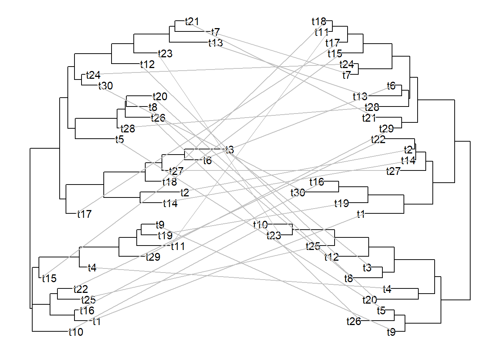
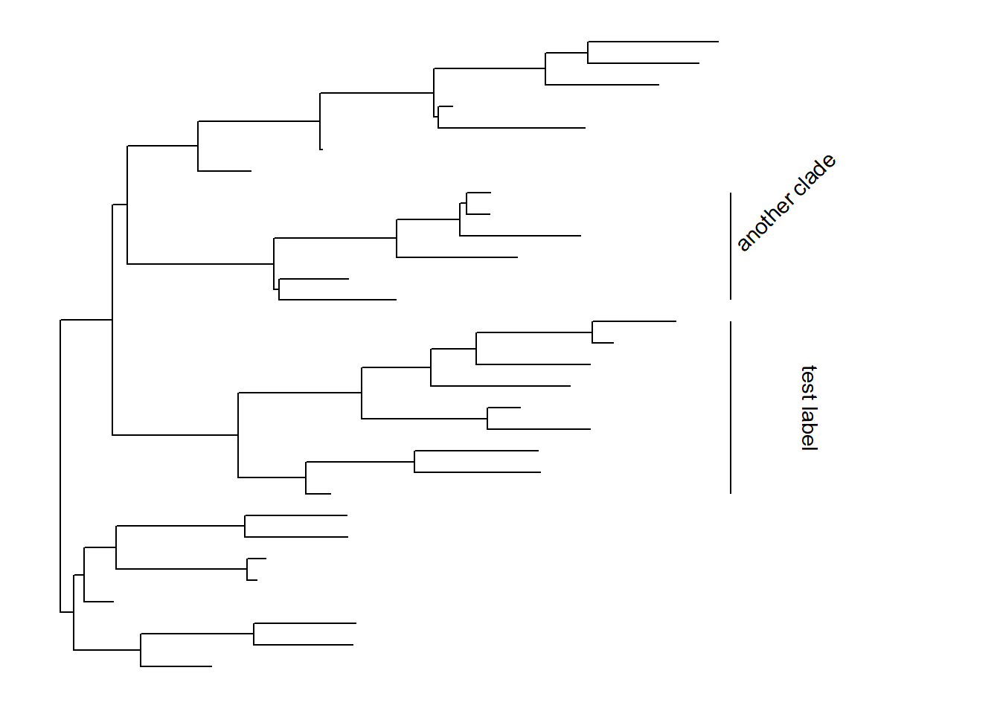

Chapter 2 Manipulating Tree with Data
2.1 Manipulating tree data using tidy interface
All the tree data parsed/merged
by treeio can be converted to tidy
data frame using the tidytree
package. The tidytree package
provides tidy interfaces to manipulate tree with associated data. For instances,
external data can be linked to phylogeny or evolutionary data obtained from
different sources can be merged using tidyverse verbs. After the tree data was
manipulated, it can be converted back to treedata object and exported to a
single tree file, further analyzed in R or visualized using ggtree (Yu et al. 2017).
2.1.1 phylo object
The phylo class defined in ape is
fundamental for phylogenetic analysis in R. Most of the R packages
in this field rely
extensively on phylo object. The tidytree package provides as_tibble
method to convert the phylo object to tidy data frame, a tbl_tree object.
library(ape)
set.seed(2017)
tree <- rtree(4)
tree##
## Phylogenetic tree with 4 tips and 3 internal nodes.
##
## Tip labels:
## [1] "t2" "t1" "t4" "t3"
##
## Rooted; includes branch lengths.x <- as_tibble(tree)
x## # A tibble: 7 x 4
## parent node branch.length label
## <int> <int> <dbl> <chr>
## 1 7 1 0.472 t2
## 2 7 2 0.274 t1
## 3 6 3 0.674 t4
## 4 5 4 0.00202 t3
## 5 5 5 NA <NA>
## 6 5 6 0.0393 <NA>
## 7 6 7 0.435 <NA>The tbl_tree object can be converted back to a phylo object.
as.phylo(x)##
## Phylogenetic tree with 4 tips and 3 internal nodes.
##
## Tip labels:
## [1] "t2" "t1" "t4" "t3"
##
## Rooted; includes branch lengths.Using tbl_tree object makes tree and data manipulation more effective and
easier. For example, we can link evolutionary trait to phylogeny using the verbs full_join
d <- tibble(label = paste0('t', 1:4),
trait = rnorm(4))
y <- full_join(x, d, by = 'label')
y## # A tibble: 7 x 5
## parent node branch.length label trait
## <int> <int> <dbl> <chr> <dbl>
## 1 7 1 0.472 t2 -0.00152
## 2 7 2 0.274 t1 -1.96
## 3 6 3 0.674 t4 1.56
## 4 5 4 0.00202 t3 -0.265
## 5 5 5 NA <NA> NA
## 6 5 6 0.0393 <NA> NA
## 7 6 7 0.435 <NA> NA2.1.2 treedata object
The tidytree package defines a treedata class to store phylogenetic tree with
associated data. After mapping external data to the tree structure, the
tbl_tree object can be converted to a treedata object.
as.treedata(y)## 'treedata' S4 object'.
##
## ...@ phylo:
## Phylogenetic tree with 4 tips and 3 internal nodes.
##
## Tip labels:
## [1] "t2" "t1" "t4" "t3"
##
## Rooted; includes branch lengths.
##
## with the following features available:
## 'trait'.The treedata class is also used
in treeio package to store
evolutionary evidences inferred by commonly used software (BEAST, EPA, HYPHY,
MrBayes, PAML, PHYLODOG, pplacer, r8s, RAxML and RevBayes) (see details in Chapter 1).
The tidytree package also provides as_tibble to convert treedata object
to a tidy data frame. The phylogentic tree structure and the evolutionary
inferences were stored in the tbl_tree object, making it consistent and easier
for manipulating evolutionary statistics inferred by different software as well
as linking external data to the same tree structure.
y %>% as.treedata %>% as_tibble## # A tibble: 7 x 5
## parent node branch.length label trait
## <int> <int> <dbl> <chr> <dbl>
## 1 7 1 0.472 t2 -0.00152
## 2 7 2 0.274 t1 -1.96
## 3 6 3 0.674 t4 1.56
## 4 5 4 0.00202 t3 -0.265
## 5 5 5 NA <NA> NA
## 6 5 6 0.0393 <NA> NA
## 7 6 7 0.435 <NA> NA2.1.3 Access related nodes
dplyr verbs can be applied to tbl_tree directly to manipulate tree data. In
addition, tidytree provides several verbs to filter related nodes, including
child, parent, offspring, ancestor, sibling and MRCA.
These verbs accept a tbl_tree and a selected node which can be node number or label.
child(y, 5)## # A tibble: 2 x 5
## parent node branch.length label trait
## <int> <int> <dbl> <chr> <dbl>
## 1 5 4 0.00202 t3 -0.265
## 2 5 6 0.0393 <NA> NAparent(y, 2)## # A tibble: 1 x 5
## parent node branch.length label trait
## <int> <int> <dbl> <chr> <dbl>
## 1 6 7 0.435 <NA> NAoffspring(y, 5)## # A tibble: 6 x 5
## parent node branch.length label trait
## <int> <int> <dbl> <chr> <dbl>
## 1 7 1 0.472 t2 -0.00152
## 2 7 2 0.274 t1 -1.96
## 3 6 3 0.674 t4 1.56
## 4 5 4 0.00202 t3 -0.265
## 5 5 6 0.0393 <NA> NA
## 6 6 7 0.435 <NA> NAancestor(y, 2)## # A tibble: 3 x 5
## parent node branch.length label trait
## <int> <int> <dbl> <chr> <dbl>
## 1 5 5 NA <NA> NA
## 2 5 6 0.0393 <NA> NA
## 3 6 7 0.435 <NA> NAsibling(y, 2)## # A tibble: 1 x 5
## parent node branch.length label trait
## <int> <int> <dbl> <chr> <dbl>
## 1 7 1 0.472 t2 -0.00152MRCA(y, 2, 3)## # A tibble: 1 x 5
## parent node branch.length label trait
## <int> <int> <dbl> <chr> <dbl>
## 1 5 6 0.0393 <NA> NA2.2 Data Integration
2.2.1 Combining tree data
The treeio package serves as an infrastructure that enables various types of phylogenetic data inferred from common analysis programs to be imported and used in R. For instance dN/dS or ancestral sequences estimated by CODEML, and clade support values (posterior) inferred by BEAST/MrBayes. In addition, treeio package supports linking external data to phylogeny. It brings these external phylogenetic data (either from software output or exteranl sources) to the R community and make it available for further analysis in R. Furthermore, treeio can combine multiple phylogenetic trees together into one with their node/branch-specific attribute data. Essentially, as a result, one such attribute (e.g., substitution rate) can be mapped to another attribute (e.g., dN/dS) of the same node/branch for comparison and further computations.
A previously published data set, seventy-six H3 hemagglutinin gene sequences of
a lineage containing swine and human influenza A viruses
(Liang et al. 2014), was here to demonstrate the utilities of comparing
evolutionary statistics inferred by different software. The dataset was
re-analyzed by BEAST for timescale estimation
and CODEML for synonymous and
non-synonymous substitution estimation. In this example, we first parsed the
outputs from BEAST using read.beast and
from CODEML using
read.codeml into two treedata objects. Then the two objects containing
separate sets of node/branch-specific data were merged via the merge_tree function.
beast_file <- system.file("examples/MCC_FluA_H3.tree", package="ggtree")
rst_file <- system.file("examples/rst", package="ggtree")
mlc_file <- system.file("examples/mlc", package="ggtree")
beast_tree <- read.beast(beast_file)
codeml_tree <- read.codeml(rst_file, mlc_file)
merged_tree <- merge_tree(beast_tree, codeml_tree)
merged_tree## 'treedata' S4 object that stored information of
## 'C:/Users/YGC/Library/R/library/ggtree/examples/MCC_FluA_H3.tree',
## 'C:/Users/YGC/Library/R/library/ggtree/examples/rst',
## 'C:/Users/YGC/Library/R/library/ggtree/examples/mlc'.
##
## ...@ phylo:
## Phylogenetic tree with 76 tips and 75 internal nodes.
##
## Tip labels:
## A/Hokkaido/30-1-a/2013, A/New_York/334/2004, A/New_York/463/2005, A/New_York/452/1999, A/New_York/238/2005, A/New_York/523/1998, ...
##
## Rooted; includes branch lengths.
##
## with the following features available:
## 'height', 'height_0.95_HPD', 'height_median',
## 'height_range', 'length', 'length_0.95_HPD',
## 'length_median', 'length_range', 'posterior', 'rate',
## 'rate_0.95_HPD', 'rate_median', 'rate_range', 'subs',
## 'AA_subs', 't', 'N', 'S', 'dN_vs_dS', 'dN', 'dS', 'N_x_dN',
## 'S_x_dS'.After merging the beast_tree and codeml_tree objects, all
node/branch-specific data imported from BEAST
and CODEML output files are
all available in the merged_tree object. The tree object was converted to
tidy data frame using tidytree
package and visualized as hexbin scatterplot of dN/dS, dN and dS inferred
by CODEML versus rate
(substitution rate in unit of substitutions/site/year) inferred
by BEAST on the same branches.
library(dplyr)
df <- fortify(merged_tree) %>%
select(dN_vs_dS, dN, dS, rate) %>%
subset(dN_vs_dS >=0 & dN_vs_dS <= 1.5) %>%
tidyr::gather(type, value, dN_vs_dS:dS)
df$type[df$type == 'dN_vs_dS'] <- 'dN/dS'
df$type <- factor(df$type, levels=c("dN/dS", "dN", "dS"))
ggplot(df, aes(rate, value)) + geom_hex() +
facet_wrap(~type, scale='free_y') Figure 2.1: Correlation of dN/dS, dN and dS versus substitution rate. After merging the BEAST and CodeML outputs, the branch-specific estimates (substitution rate, dN/dS , dN and dS) from the two analysis programs are compared on the same branch basis. The associations of dN/dS, dN and dS vs. rate are visualized in hexbin scatter plots.
The output is illustrated in Fig. 2.1. We can then test the association of these node/branch-specific data using Pearson correlation, which in this case showed that dN and dS, but not dN/dS are significantly (p-values) associated with rate.
Using merge_tree, we are able to compare analysis results using identical
model from different software packages or different models using different or
identical software. It also allows users to integrate different analysis finding
from different software packages. Merging tree data is not restricted to
software findings, associating external data to analysis findings is also
granted. The merge_tree function is chainable and allows several tree objects
to be merged into one.
phylo <- as.phylo(beast_tree)
N <- Nnode2(phylo)
d <- tibble(node = 1:N, fake_trait = rnorm(N), another_trait = runif(N))
fake_tree <- treedata(phylo = phylo, data = d)
triple_tree <- merge_tree(merged_tree, fake_tree)
triple_tree## 'treedata' S4 object that stored information of
## 'C:/Users/YGC/Library/R/library/ggtree/examples/MCC_FluA_H3.tree',
## 'C:/Users/YGC/Library/R/library/ggtree/examples/rst',
## 'C:/Users/YGC/Library/R/library/ggtree/examples/mlc'.
##
## ...@ phylo:
## Phylogenetic tree with 76 tips and 75 internal nodes.
##
## Tip labels:
## A/Hokkaido/30-1-a/2013, A/New_York/334/2004, A/New_York/463/2005, A/New_York/452/1999, A/New_York/238/2005, A/New_York/523/1998, ...
##
## Rooted; includes branch lengths.
##
## with the following features available:
## 'height', 'height_0.95_HPD', 'height_median',
## 'height_range', 'length', 'length_0.95_HPD',
## 'length_median', 'length_range', 'posterior', 'rate',
## 'rate_0.95_HPD', 'rate_median', 'rate_range', 'subs',
## 'AA_subs', 't', 'N', 'S', 'dN_vs_dS', 'dN', 'dS', 'N_x_dN',
## 'S_x_dS', 'fake_trait', 'another_trait'.The triple_tree object showed above contains analysis results obtained from BEAST
and CODEML, and evolutionary
trait from external sources. All these information can be used to annotate the
tree using ggtree (Yu et al. 2017).
2.2.2 Linking external data to phylogeny
In addition to analysis findings that are associated with the tree as we showed
above, there is a wide range of heterogeneous data, including phenotypic data,
experimental data and clinical data etc., that need to be integrated and
linked to phylogeny. For example, in the study of viral evolution, tree nodes may
associated with epidemiological information, such as location, age and subtype.
Functional annotations may need to be mapped on gene trees for comparative
genomics studies. To facilitate data
integration, treeio provides
full_join method to link external data to phylogeny and stored in treedata object.
Here are examples of linking external data to a phylogenetic tree. After that, we can use exporter to combine the tree and the data to a single tree file. The data that mapped on the phylogenetic tree can also be used to visualize or annotate the tree using ggtree (Yu et al. 2017).
file <- system.file("extdata/BEAST", "beast_mcc.tree", package="treeio")
beast <- read.beast(file)
x <- data_frame(label = as.phylo(beast)$tip.label, trait = rnorm(Ntip(beast)))
full_join(beast, x, by="label")## 'treedata' S4 object that stored information of
## 'C:/Users/YGC/Library/R/library/treeio/extdata/BEAST/beast_mcc.tree'.
##
## ...@ phylo:
## Phylogenetic tree with 15 tips and 14 internal nodes.
##
## Tip labels:
## A_1995, B_1996, C_1995, D_1987, E_1996, F_1997, ...
##
## Rooted; includes branch lengths.
##
## with the following features available:
## 'height', 'height_0.95_HPD', 'height_median',
## 'height_range', 'length', 'length_0.95_HPD',
## 'length_median', 'length_range', 'posterior', 'rate',
## 'rate_0.95_HPD', 'rate_median', 'rate_range', 'trait'.N <- Nnode2(beast)
y <- data_frame(node = 1:N, fake_trait = rnorm(N), another_trait = runif(N))
full_join(beast, y, by="node")## 'treedata' S4 object that stored information of
## 'C:/Users/YGC/Library/R/library/treeio/extdata/BEAST/beast_mcc.tree'.
##
## ...@ phylo:
## Phylogenetic tree with 15 tips and 14 internal nodes.
##
## Tip labels:
## A_1995, B_1996, C_1995, D_1987, E_1996, F_1997, ...
##
## Rooted; includes branch lengths.
##
## with the following features available:
## 'height', 'height_0.95_HPD', 'height_median',
## 'height_range', 'length', 'length_0.95_HPD',
## 'length_median', 'length_range', 'posterior', 'rate',
## 'rate_0.95_HPD', 'rate_median', 'rate_range', 'fake_trait',
## 'another_trait'.Manipulating tree object is frustrated with the fragmented functions available
for working with phylo object, not to mention linking external data to the
phylogeny structure. With treeio package, it is easy to combine tree data from various sources.
In addition, with tidytree package (session 1.2), manipulating tree is more easier using
tidy data principles and
consistent with tools already in wide use, including
dplyr,
tidyr,
ggplot2
and ggtree.
2.2.3 Grouping taxa
tidytree implemented groupOTU and groupClade for adding taxa grouping
information to the input tbl_tree object. These grouping information can be
used directly in tree visualization (e.g. coloring tree based on grouping)
with ggtree.
2.2.3.1 groupClade
The groupClade method accepts an internal node or a vector of internal nodes
to add grouping information of clade/clades.
nwk <- '(((((((A:4,B:4):6,C:5):8,D:6):3,E:21):10,((F:4,G:12):14,H:8):13):13,((I:5,J:2):30,(K:11,L:11):2):17):4,M:56);'
tree <- read.tree(text=nwk)
groupClade(as_tibble(tree), c(17, 21))## # A tibble: 25 x 5
## parent node branch.length label group
## <int> <int> <dbl> <chr> <fct>
## 1 20 1 4 A 1
## 2 20 2 4 B 1
## 3 19 3 5 C 1
## 4 18 4 6 D 1
## 5 17 5 21 E 1
## 6 22 6 4 F 2
## 7 22 7 12 G 2
## 8 21 8 8 H 2
## 9 24 9 5 I 0
## 10 24 10 2 J 0
## # ... with 15 more rows2.2.3.2 groupOTU
set.seed(2017)
x <- as_tibble(rtree(4))
## the input nodes can be node ID or label
groupOTU(x, c('t1', 't4'), group_name = "fake_group")## # A tibble: 7 x 5
## parent node branch.length label fake_group
## <int> <int> <dbl> <chr> <fct>
## 1 7 1 0.472 t2 0
## 2 7 2 0.274 t1 1
## 3 6 3 0.674 t4 1
## 4 5 4 0.00202 t3 0
## 5 5 5 NA <NA> 0
## 6 5 6 0.0393 <NA> 1
## 7 6 7 0.435 <NA> 1The groupOTU will trace back from input nodes to most recent common ancestor.
In this example, nodes 2, 3, 7 and 6 (2 (t1) -> 7 -> 6 and 3 (t4) -> 6) are
grouping together.
Related OTUs are grouping together and they are not necessarily within a clade. They can be monophyletic (clade), polyphyletic or paraphyletic.
cls <- list(c1=c("A", "B", "C", "D", "E"),
c2=c("F", "G", "H"),
c3=c("L", "K", "I", "J"),
c4="M")
as_tibble(tree) %>% groupOTU(cls)## # A tibble: 25 x 5
## parent node branch.length label group
## <int> <int> <dbl> <chr> <fct>
## 1 20 1 4 A c1
## 2 20 2 4 B c1
## 3 19 3 5 C c1
## 4 18 4 6 D c1
## 5 17 5 21 E c1
## 6 22 6 4 F c2
## 7 22 7 12 G c2
## 8 21 8 8 H c2
## 9 24 9 5 I c3
## 10 24 10 2 J c3
## # ... with 15 more rowsIf there are conflicts when tracing back to mrca, user can set overlap
parameter to “origin” (the first one counts), “overwrite” (default, the last one
counts) or “abandon” (un-selected for grouping), see
also
discussion here.
2.3 Rescaling Tree Branches
Phylogenetic data can be merged for joint analysis (Figure 2.1). They can be displayed on the same tree structure as more complex annotation to help visually inspection of their evolutionary patterns. All the numerical data stored in treedata object can be used to re-scale tree branches. For example, CodeML infers dN/dS, dN and dS, all these statistics can be used as branch lengths.
p1 <- ggtree(merged_tree) + theme_tree2()
p2 <- ggtree(rescale_tree(merged_tree, 'dN')) + theme_tree2()
p3 <- ggtree(rescale_tree(merged_tree, 'rate')) + theme_tree2()
cowplot::plot_grid(p1, p2, p3, ncol=3, labels = LETTERS)Figure 2.2: Re-scaling tree branches. The tree with branches scaled in time (year from the root) (A). The tree was re-scaled using dN as branch lengths (B). The tree was re-scaled using substitution rates (C).
2.4 Subsetting Tree with Data
2.4.1 Remove tips in a phylogenetic tree
2.4.2 Subset tree by tip label
2.5 Manipulating tree data for visualization
Tree visualization is supported by ggtree. Although ggtree implemented several methods for visual exploration of tree with data, you may want to do something that is not supported directly. In this case, you need to manipulate tree data with node coordination positions that used for visualization. This is quite easy with ggtree. User can use foritfy method which internally call tidytree::as_tibble to convert the tree to tidy data frame and add columns of coordination positions (i.e. x, y, branch and angle) that are used to plot the tree. You can also access the data via ggtree(tree)$data.
Here is an example to plot two trees face to face that is similar to a cophyloplot.
library(dplyr)
library(ggtree)
x <- rtree(30)
y <- rtree(30)
p1 <- ggtree(x)
p2 <- ggtree(y)
d1 <- p1$data
d2 <- p2$data
## reverse x-axis and
## set offset to make the tree in the right hand side of the first tree
d2$x <- max(d2$x) - d2$x + max(d1$x) + 1
pp <- p1 + geom_tiplab() + geom_tree(data=d2) + geom_tiplab(data = d2, hjust=1)
dd <- bind_rows(d1, d2) %>%
filter(!is.na(label))
pp + geom_line(aes(x, y, group=label), data=dd, color='grey')
It is quite easy to plot multiple trees and connect taxa in one figure. For instance, plotting trees contructed from all internal gene segments of influenza virus and connecting equivalent strans across the trees (Venkatesh et al. 2018).
z <- rtree(30)
d2 <- fortify(y)
d3 <- fortify(z)
d2$x <- d2$x + max(d1$x) + 1
d3$x <- d3$x + max(d2$x) + 1
pp <- p1 + geom_tree(data = d2) + geom_tree(data = d3)
dd = bind_rows(d1, d2, d3) %>%
filter(!is.na(label))
pp + geom_line(aes(x, y, group=label, color=node < 15), data=dd, alpha=.3)
2.6 Summary
References
Yu, Guangchuang, David K. Smith, Huachen Zhu, Yi Guan, and Tommy Tsan-Yuk Lam. 2017. “Ggtree: An R Package for Visualization and Annotation of Phylogenetic Trees with Their Covariates and Other Associated Data.” Methods in Ecology and Evolution 8 (1): 28–36. https://doi.org/10.1111/2041-210X.12628.
Liang, Huyi, Tommy Tsan-Yuk Lam, Xiaohui Fan, Xinchun Chen, Yu Zeng, Ji Zhou, Lian Duan, et al. 2014. “Expansion of Genotypic Diversity and Establishment of 2009 H1N1 Pandemic-Origin Internal Genes in Pigs in China.” Journal of Virology, July, JVI.01327–14. https://doi.org/10.1128/JVI.01327-14.
Venkatesh, Divya, Marjolein J. Poen, Theo M. Bestebroer, Rachel D. Scheuer, Oanh Vuong, Mzia Chkhaidze, Anna Machablishvili, et al. 2018. “Avian Influenza Viruses in Wild Birds: Virus Evolution in a Multihost Ecosystem.” Journal of Virology 92 (15). https://doi.org/10.1128/JVI.00433-18.